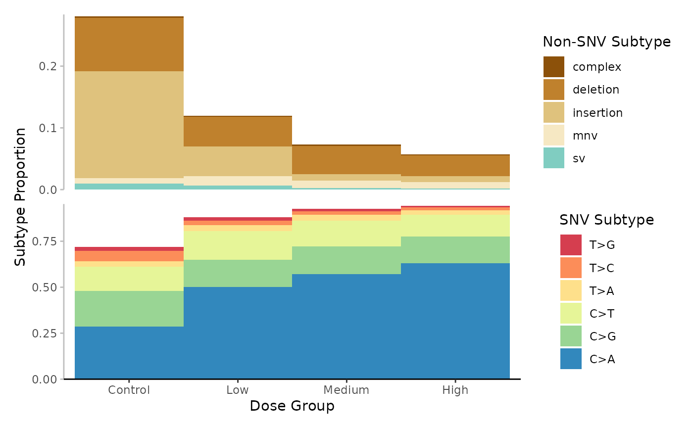
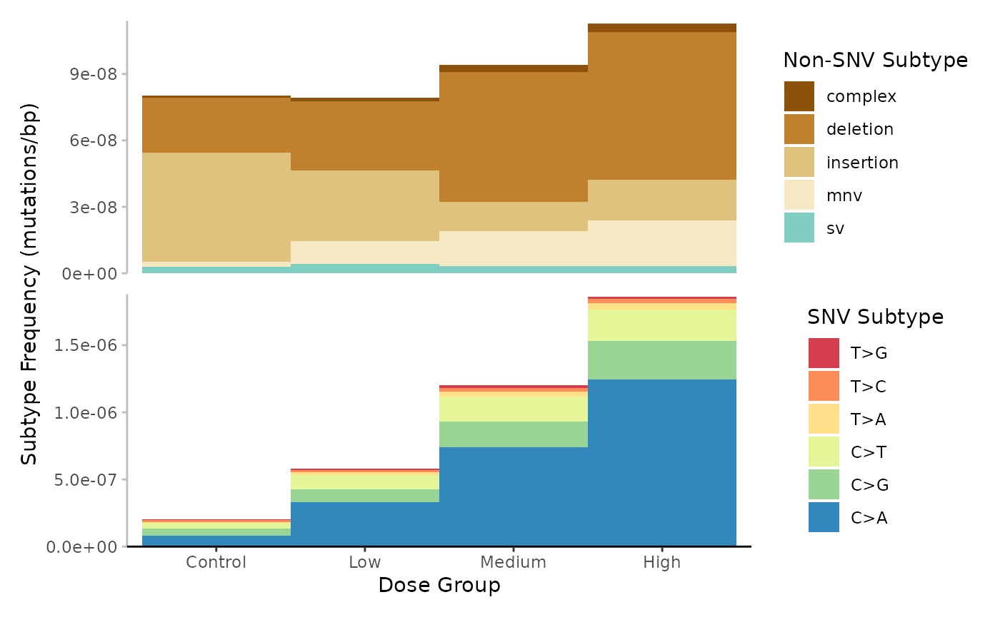
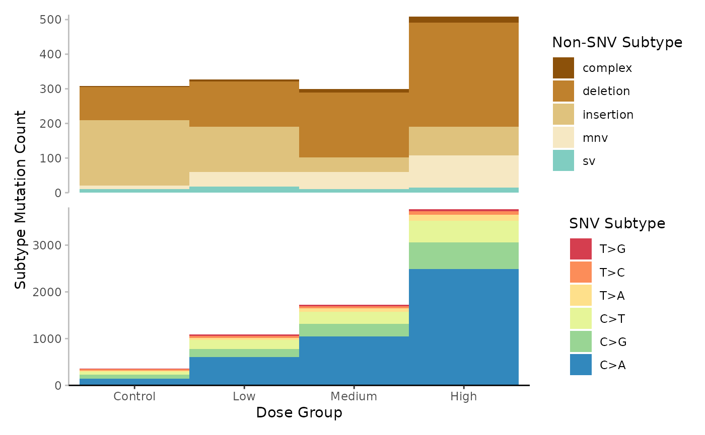
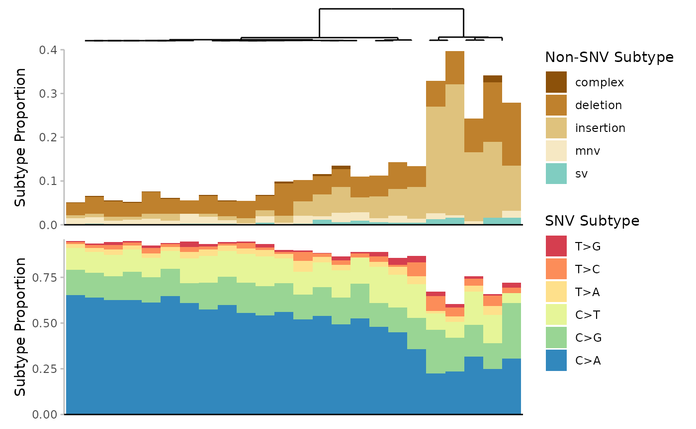
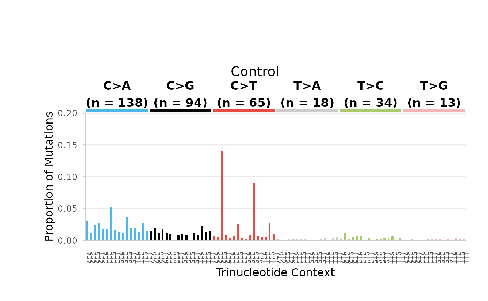
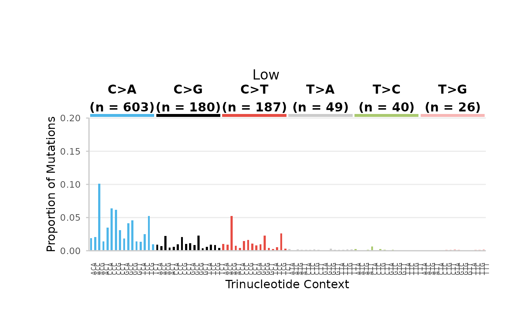
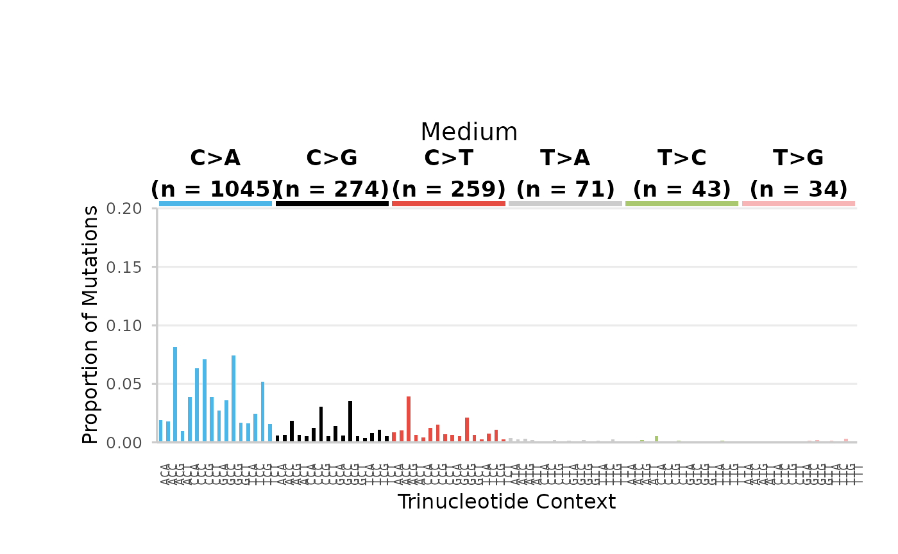
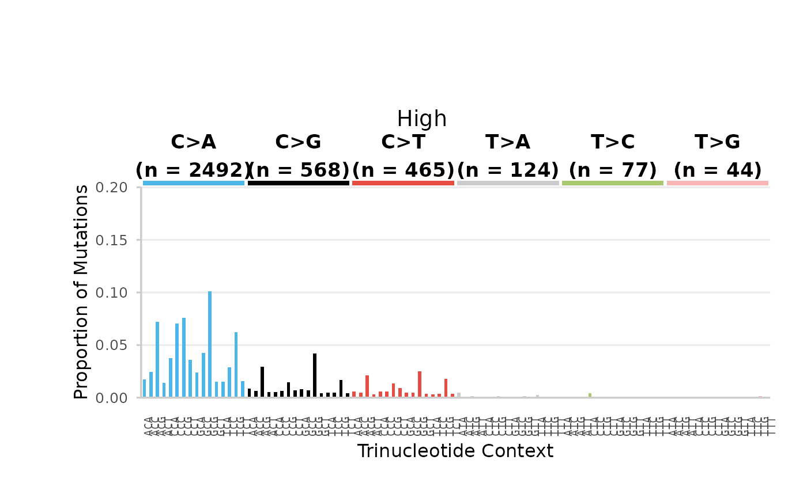
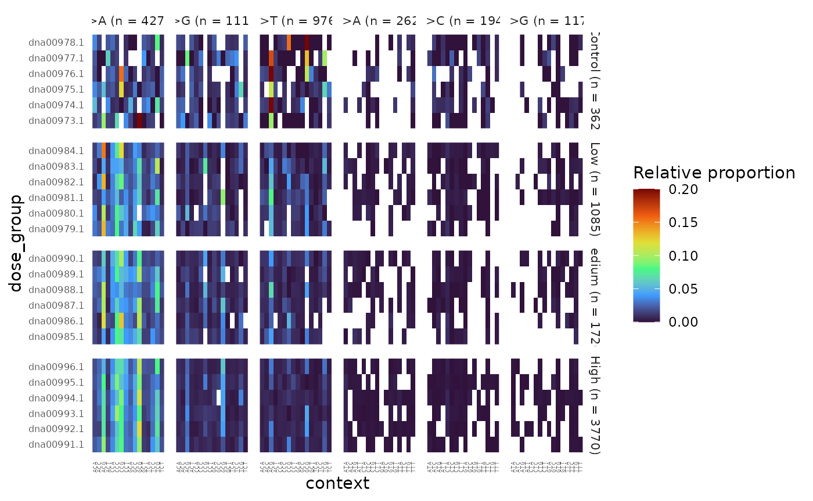

MutSeqR: Analyzing Mutation Spectra
Annette E. Dodge
Environmental Health Science and Research Bureau, Health Canada, Ottawa, ON, Canada.Matthew J. Meier
matthew.meier@hc-sc.gc.ca Source:vignettes/articles/Analyzing_Mutation_Spectra.Rmd
Analyzing_Mutation_Spectra.RmdThe mutation spectra is the pattern of mutation subtypes within a sample or group. The mutation spectra can inform on the mechanisms involved in mutagenesis which is used to extrapolate findings across diverse populations and species.
Load MutSeqR and Example Data
library(ExperimentHub)
# load the index
eh <- ExperimentHub()Comparing Mutation Spectra between Groups
The mutation spectra can be compared between experimental groups
using the spectra_comparison() function. This function will
compare the proportion of mutation subtypes at any resolution between
user-defined groups using a modified contingency table approach (Piegorsch and Bailer 1994).
This approach is applied to the mutation counts of each subtype in a
given group. The contingency table is represented as
where
is the number of subtypes, and
is the number of groups. spectra_comparison() performs
comparisons between
specified groups. The statistical hypothesis of homogeneity is that the
proportion (count/group total) of each mutation subtype equals that of
the other group. To test the significance of the homogeneity hypothesis,
the
likelihood ratio statistic is used:
represents the mutation counts and are the expected counts under the null hypothesis. The statistic possesses approximately a distribution in large sample sizes under the null hypothesis of no spectral differences. Thus, as the column totals become large, may be referred to a distribution with degrees of freedom. The statistic may exhibit high false positive rates in small sample sizes when referred to a distribution. In such cases, we instead switch to an F-distribution. This has the effect of reducing the rate at which rejects each null hypothesis, providing greater stability in terms of false positive error rates. Thus when , where is the total mutation counts across both groups, the function will use a F-distribution, otherwise it will use a -distribution.
This comparison assumes independance among the observations. Each tabled observation represents a sum of independent contributions to the total mutant count. We assume independance is valid for mutants derived from a mixed population, however, mutants that are derived clonally from a single progenitor cell would violate this assumption. As such, it is recommended to use the MFmin method of mutation counting for spectral analyses to ensure that all mutation counts are independant. In those cases where the independence may be invalid, and where additional, extra-multinomial sources of variability are present, more complex, hierarchical statistical models are required. This is outside the scope of this package.
General Usage: spectra_comparison()
The first step is to calculate the per-group mf data at the desired
subtype_resolution using calculate_mf(). This mf_data is
then supplied to spectra_comparison() along with a
contrasts table to specify the comparisons.
Specify the variable(s) by which you wish to make your comparisons
with The exp_variable parameter. Variable(s) must be
present in your mf_data.
The contrasts parameter can be supplied with either a
data frame or a filepath to a text file that will be loaded into R. The
table must consist of two columns, each containing levels within the
fixed_effects. The level in the first column will be compared to the
level in the second column for each row. If you are comparing across
more than one experiment variable, seperate the levels of the variables
you are comparing with a colon. A level from each variable must be
included in all values of the contrasts table.
The function will output the
statistic and p-value for each specified comparison listed in
constrasts. P-values are adjusted for multiple comparison
using the Sidak method (adj_p.value).
Example 1. In our example data, we are studying the mutagenic effect of BaP. Our samples were exposed to three doses of a BaP (Low, Medium, High), or to the vehicle control (Control). We will compare the base_6 snv subtypes, along with non-snv variants, of each of the three dose groups to the control. In this way we can investigate if exposure to BaP leads to significant spectral differences.
First, we will calculate the per-dose MF at the 6-based subtype resolution. This function will use the mutation sums (sum_min) that are calculated for each subtype per dose group, not the frequencies.
# load example data:
example_data <- eh[["EH9861"]]
# Calculate the MF per dose at the base_6 resolution.
mf_data_6_dose <- calculate_mf(
mutation_data = example_data,
cols_to_group = "dose_group",
subtype_resolution = "base_6"
)Next, we generate a contrasts table that specifies the pairwise comparisons we want to perform. We will compare each BaP dose group to the control group.
# Create the contrast table
contrasts_table <- data.frame(
col1 = c("Low", "Medium", "High"),
col2 = c("Control", "Control", "Control")
)Finally, run the analysis.
# Run the analysis
ex_spectra_comp <- spectra_comparison(
mf_data = mf_data_6_dose,
exp_variable = "dose_group",
contrasts = contrasts_table
)Table 23. Comparison of the 6-base subtype Proportions between Dose Groups.
Our results indicate the base-6 mutation spectra of all three BaP dose groups are significantly different from that of the control group.
Mutational Signatures
Mutational processes generate characteristic patterns of mutations,
known as mutational signatures. Distinct mutational signatures have been
extracted from various cancer types and normal tissues using data from
the Catalogue of Somatic Mutations in Cancer, (COSMIC) database.
These include signatures of single base substitutions (SBSs), doublet
base substitutions (DBSs), small insertions and deletions (IDs) and copy
number alterations (CNs). It is possible to assign mutational signatures
to individual samples or groups using the signature_fitting
function. Linking ECS mutational profiles of specific mutagens to
existing mutational signatures provides empirical evidence for the
contribution of environmental mutagens to the mutations found in human
cancers and informs on mutagenic mechanisms.
The signature_fitting function utilizes the SigProfiler suite of tools
(Díaz-Gay et al. (2023); Khandekar et al. (2023)) to assign SBS
signatures from the COSMIC database to the 96-base SNV subtypes of a
given group by creating a virtual environment to run python using
reticulate. signature_fitting() facilitates
interoperability between these tools for users less familiar with python
and assists users by coercing the mutation data to the necessary
structure for the SigProfiler tools.
This function will install several python dependencies using a conda virtual environment on first use, as well as the FASTA files for all chromosomes for your specified reference genome. As a result ~3Gb of storage must be available for the downloads of each genome.
SNVs in their 96-base trinucleotide context are summed across groups
to create a mutation count matrix by
SigProfilerMatrixGenerator() (SigProfilerMatrixGenerator;
Khandekar et al. (2023)).
Analyze.cosmic_fit (SigProfilerAssignment; Díaz-Gay et al. (2023)) is then run to assign
mutational signatures to each group using refitting methods, which
quantifies the contribution of a set of signatures to the mutational
profile of the group. The process is a numerical optimization approach
that finds the combination of mutational signatures that most closely
reconstructs the mutation count matrix. To quantify the number of
mutations imprinted by each signature, the tool uses a custom
implementation of the forward stagewise algorithm and it applies
nonnegative least squares, based on the Lawson-Hanson method. Cosine
similarity values, and other solution statistics, are generated to
compare the reconstructed mutational profile to the original mutational
profile of the group, with cosine values > 0.9 indicating a good
reconstruction.
Currently, signature_fitting offers fitting of COSMIC
version 3.4 SBS signatures to the SBS96 matrix of any sample/group. For
advanced use, including using a custom set of reference signatures, or
fitting the DBS, ID, or CN signatures, it is suggested to use the
SigProfiler python tools directly in as described in their respective documentation.
General Usage: signature_fitting()
Examples include external dependencies
signature_fitting requires the installation of
reticulate as well as a version of python 3.8 or newer.
# Install reticulate
install.packages("reticulate")
# Install python
reticulate::install_python()signature_fitting will take the imported (and filtered,
if applicable) mutation_data and create mutational matrices
for the SNV mutations. Mutations are summed across levels of the
group parameter. This can be set to individual samples or
to an experimental group. Variants flagged in the
filter_mut column will not be included in the mutational
matrices.
The project_genome will be referenced for the creation
of the mutational matrices. The reference genome is installed
automatically from ENSEMBL via FTP if it is not already.
The virtual environment can be specified with the
env_name parameter. If no such environmnent exists, then
the function will create one in which to store the dependencies and run
the signature refitting. Specify your version of python using the
python_version parameter (must be 3.8 or higher).
Example 2. Determine the COSMIC SBS signatures associated with each BaP dose group.
# Run Analysis
signature_fitting(
mutation_data = example_data, # filtered mutation data
project_name = "Example",
project_genome = "mm10",
env_name = "MutSeqR",
group = "dose_group",
python_version = "3.11",
output_path = NULL
)Output
Results from the signature_fitting will be stored in an
output folder. A filepath to a specific output directory can be
designated using the output_path parameter. If null, the
output will be stored within your working directory. Results will be
organized into subfolders based on the group parameter. The
output structure is divided into three folders: input, output, and
logs.
Input folder: “mutations.txt”, a text file with the
mutation_data coerced into the required format for
SigProfilerMatrixGenerator. It consists of a list of all the snv
variants in each group alongside their genomic positions.
This data serves as input for matrix generation.
Log folder: the error and the log files for SigProfilerMatrixGeneration.
The output folder contains the results from matrix generation and signature refitting desribed in detail below.
Matrix Generation Output
signature_fitting uses SigProfilerMatrixGenerator to
create mutational matrices ((Bergstrom et al.
2019)). Mutation matrices are created for single-base
substitutions (SBS) and doublet-base substitutions (DBS), including
matrices with extended sequence context and transcriptional strand bias.
SBS and DBS matrices are stored in their respective folders in the
output directory. Only the SBS96 matrix is used for
refitting. Matrices are stored as .all files
which can be viewed in a text-editor.
| Folder | File | Definition | Plot file |
|---|---|---|---|
| SBS | project.SBS6.all | The 6 pyrimidine single-nucleotide variants. C>A, C>G, C>T, T>A, T>C, or T>G | plots/SBS_6_plots_project.pdf |
| SBS | project.SBS18.all | The 6 pyrimidine single-nucleotide variants within 3 transcriptional bias categories: Untranscribed (U), Transcribed (T), Non-Transcribed Region (N). | |
| SBS | project.SBS24.all | The 6 pyrimidine single-nucleotide variants within 4 transcriptional bias categories: Untranscribed (U), Transcribed (T), Bidirectional (B), Non-Transcribed Region (N). | plots/SBS_24_plots_project.pdf |
| SBS | project.SBS96.all | The 6 pyrimidine single-nucleotide variants alongside their flanking nucleotides (4 x 4 = 16 combinations). Ex. A[C>G]T | plots/SBS_96_plots_project.pdf |
| SBS | project.SBS288.all | The 96-base single-nucleotide variants within 3 transcriptional bias categories (U, T, N). | plots/SBS_288_plots_project.pdf |
| SBS | project.SBS384.all | The 96-base single-nucleotide variants within 4 transcriptional bias categories (U, T, N, B). | plots/SBS_384_plots_project.pdf |
| SBS | project.SBS1536.all | The 6 pyrimidine single-nucleotide variants alongside their flanking dinucleotides (16 x 16 = 256 combinations). Ex. AA[C>G]TT | plots/SBS_1536_plots_project.pdf |
| SBS | project.SBS4608.all | The 1536-base single-nucleotide variants within 3 transcriptional bias categories (U, T, N). | |
| SBS | project.SBS6144.all | The 1536-base single-nucleotide variants within 4 transcriptional bias categories (U, T, N, B). | |
| DBS | project.DBS78.all | The 78 pyrimidine double-nucleotide variants. | plots/DBS_78_plots_project.pdf |
| DBS | project.DBS150.all | The 36 dinucleotide combinations that have only all purines or all pyrimidines x 3 transcriptionla bias categories (U, T, N). | |
| DBS | project.DBS186.all | The 36 dinucleotide combinations that have only all purines or all pyrimidines x 4 transcriptional bias categories (U, T, N, B). | plots/DBS_186_plots_project.pdf |
| DBS | project.DBS1248.all | The 78 pyrimidine double-nucleotide variants alongside their flanking nucleotides (Possible starting nucleotides (4) x 78 x possible ending nucleotides (4) = 1248 combinations) | |
| DBS | project.DBS2400.all | The 36 dinucleotide combinations that have only all purines or all pyrimidines alongside their flanking nucleotides within transcriptional bias categories (U, T, N). | |
| DBS | project.DBS2676.all | The 36 dinucleotide combinations that have only all purines or all pyrimidines alongside their flanking nucleotides within 4 transcriptional bias categories (U, T, N, B). | |
| TSB | strandBiasTes_24.txt | Transcription Strand Bias Test stats of the SBS6 variants | |
| TSB | strandBiasTes_384.txt | Transcription Strand Bias Test stats of the SBS96 variants | |
| TSB | strandBiasTes_6144.txt | Transcription Strand Bias Test stats of the SBS1536 variants | |
| TSB | significantResults_strandBiasTest.txt | Returns significant results from the three files above. |
Doublet-base Matrices (DBS): DBS are somatic
mutations in which a set of two adjacent DNA base-pairs are
simultaneously substituted with another set of two adjacent DNA
base-pairs. We do not recommend using the DBS matrices
generated using signature_fitting The
signature_fitting function is designed to handle only SBS
mutations. All true MNVs, including doublets, are filtered out of the
mutation_data prior to MatrixGeneration. However, the tool
will still attempt to identify DBSs and will occasionally find two
independent SBSs occuring next to each other simply by chance. If you
wish to use DBS mutations in your signature analysis, please refer
directly to the SigProfiler tools.
Plots: Barplots of the mutation matrices for all groups can be found in the “plots” folder. The number of mutations are plotted for each group at the various subtype resolutions. Files for each matrix are listed in Table @ref(tab:mat-files).
vcf_files: This output folder provides text-based files containing the original mutations and their SigProfilerMatrixGenerator classification for each chromosome. The files are separated into dinucleotides (DBS), multinucleotide substitutions (MNS), and single nucleotide variants (SNV) folders containing the appropriate files. The headers are:
- The group
- the chromosome
- the position
- the SigProfilerMatrixGenerator classification
- the strand {1, 0, -1}.
The headers for each file are the same with the exception of the MNS files which don’t contain a matrix classification or a strand classification. As noted above the DBS and MNS matrices do no reflect the true mutation counts for these variant types. Only SBS/SNV mutations are included in the matrix generation.
Transcription Strand Bias (TSB): SBS and DBS mutations are tested for transcription strand bias. Mutations are first classified within the four transcriptional bias categories:
| Category | Description |
|---|---|
| Transcribed (T) | The variant is on the transcribed (template) strand. |
| Untranscribed (U) | The variant is on the untranscribed (coding) strand. |
| Bidirectional (B) | The variant is on both strands and is transcribed either way. |
| Nontranscribed (N) | The variant is in a non-coding region and is untranslated. |
The tool will then perform a transcription strand bias test which compares the number of transcribed and untranscribed mutations for each mutation type. For example, it will compare the number of transcribed T>C to untranscribed T>C mutations. Should there be a significant difference, it would indicate that T:A>C:G mutations are occuring at a higher rate on one of the strands compared to the other. The output files contain the following headers:
- the
group - the mutation type
- the enrichment value (# Transcribed / # untranscribed)
- the p-value, corrected for multiple comparisons using the false discrover rate method
- the false discovery rate q-value
Signature Refitting Results
Results from the signature refitting perfomed by SigProfilerAssignment will be stored within the “Assignment_Solution” folder. “Assignment_Solution” consists of 3 subdirectories; “Activities”, “Signatures”, and “Solution_Stats”.
Activities
| File | Description |
|---|---|
| Assignment_Solution_Activities.txt | This file contains the activity matrix for the selected signatures. The first column lists all of the samples/groups. All of the following columns list the calculated activity value for the respective signatures. Signature activities correspond to the specific numbers of mutations from the sample’s original mutation matrix caused by a particular mutational process. |
| Assignment_Solution_Activity_Plots.pdf | This file contains a stacked barplot showing the number of mutations in each signature on the y-axis and the samples/groups on the x-axis. |
| Assignment_Solution_TMB_plot.pdf | This file contains a tumor mutational burden plot. The y-axis is the somatic mutations per megabase and the x-axis is the number of samples/groups plotted over the total number of samples/groups included. The column names are the mutational signatures and the plot is ordered by the median somatic mutations per megabase. |
| Decomposed_Mutation_Probabilities.txt | This file contains the probabilities of each of the 96 mutation types in each sample/group. The probabilities refer to the probability of each mutation type being caused by a specific signature. The first column lists all the samples/groups, the second column lists all the mutation types, and the following columns list the calculated probability value for the respective signatures. |
| SampleReconstruction | This folder contains generated plots for each sample/group summarizing the assignment results. Each plot consists of three panels. (i) Original: a bar plot of the inputted 96SBS mutation matrix for the sample/group. (ii) Reconstructed: a bar plot of the reconstruction of the original mutation matrix. (iii) The mutational profiles for each of the known mutational signatures assigned to that sample/group, including the activities for each signature. Accuracy metrics for the reconstruction are displayed at the bottom of the figure. |
Signatures
| Files | Description |
|---|---|
| Assignment_Solution_Signatures.txt | The distribution of mutation types in the input mutational signatures. The first column lists all 96 of the mutation types. The following columns are the signatures. |
| SBS_96_plots_Assignment_Solution.pdf | Barplots for each signature identified that depicts the proportion of the mutation types for that signature. The top right corner also lists the total number of mutations and the percentage of total mutations assigned to the mutational signature. |
Solution_Stats
| Files | Description |
|---|---|
| Assignment_Solution_Samples_Stats.txt | The accuracy metrics for the reconstruction. statistics for each sample including the total number of mutations, cosine similarity, L1 norm (calculated as the sum of the absolute values of the vector), L1 norm percentage, L2 norm (calculated as the square root of the sum of the squared vector values), and L2 norm percentage, along with the Kullback-Leibler divergence. |
| Assignment_Solution_Signature_Assignment_log.txt | The events that occur when known signatures are assigned to an input sample. The information includes the L2 error and cosine similarity between the reconstructed and original sample within different composition steps. |
Other Files
JOB_METADATA_SPA.txt: This file contains the metadata about system and runtime.
Use SigProfiler Webtool
Users may choose to use the SigProfiler
Webtool instead of using the
signature_fitting()function. MutSeqR offers functions to
coerce mutation data into the proper format for input files.
Mutation Calling File
write_mutation_calling_file() creates a simple text file
from mutation data that can be used for mutation signatures analysis
using the SigProfiler Assignment web application as a “mutation calling
file”. Signature analyses are done at the sample level when using
mutation calling files. The file will be saved to your output directory,
specified in output_path.
Example 3. Analyze the COSMIC SBS signatures contributing to each of the 24 samples using the SigProfiler Web Tool. Output a mutation calling file that can be uploaded to the webtool.
write_mutation_calling_file(
mutation_data = example_data,
project_name = "Example",
project_genome = "mm10",
output_path = NULL
)Mutational Matrix
write_mutational_matrix() will sum mutations across
user-defined groups before coercing the data into the proper format for
input as a “mutational matrix”. SNV subtypes can be resolved to either
the base_6 or base_96 resolution. The file is saved to the specified
output directory.
Example 4. Analyze the COSMIC SBS signatures contributing to each dose group using the SigProfiler Web Tool. Output a mutational matrix that can be uploaded to the webtool.
write_mutational_matrix(
mutation_data = example_data,
group = "dose_group",
subtype_resolution = "base_96",
mf_type = "min",
output_path = NULL
)Visualizing the Mutation Spectra
plot_spectra
The mutation spectra can be visualized with plot_spectra
which will create a stacked bar plot for user-defined groups at the
desired subtype resolution. Mutation subtypes are represented by colour.
The value can represent subtype proportion, frequency
(mf), or count (sum).
We will first calculate the mf data at the 6-base resolution for each dose. We will exclude ambiguous or uncategorized variants since we don’t have any in this data.
mf_data_6_dose <- calculate_mf(
mutation_data = example_data,
cols_to_group = "dose_group",
subtype_resolution = "base_6",
variant_types = c("-ambiguous", "-uncategorized")
)We will set the desired order of our dose groups using factor levels. We will specify to our function that the dose_group variable should be used to order the levels in the plot.
# Set the desired order for the dose group:
mf_data_6_dose$dose_group <- factor(
mf_data_6_dose$dose_group,
levels = c("Control", "Low", "Medium", "High")
)Proportion
Example 5. Plot the base_6 proportions for each dose group.
# Plot
plot <- plot_spectra(
mf_data = mf_data_6_dose,
group_col = "dose_group",
subtype_resolution = "base_6",
response = "proportion",
group_order = "arranged",
group_order_input = "dose_group",
x_lab = "Dose Group",
y_lab = "Subtype Proportion"
)
plot
Mutation spectrum (minimum) per Dose. Subtypes include single-nucleotide, variants at 6-base resolution, complex variants, deletions, insertions, multi-nucleotide variants (mnv) and structural variants (sv). Subtypes are represented by colour. Data is the proportion normalized to sequencing depth.
Frequency
Example 6. Plot the base_6 frequences for each dose group.
# Plot
plot <- plot_spectra(
mf_data = mf_data_6_dose,
group_col = "dose_group",
subtype_resolution = "base_6",
response = "mf",
group_order = "arranged",
group_order_input = "dose_group",
x_lab = "Dose Group",
y_lab = "Subtype Frequency (mutations/bp)"
)
plot
Mutation spectrum (minimum) per Dose. Subtypes include single-nucleotide, variants at 6-base resolution, complex variants, deletions, insertions, multi-nucleotide variants (mnv) and structural variants (sv). Subtypes are represented by colour. Data is subtype frequency (mutations/bp).
Sum
Example 7. Plot the base_6 mutation sums for each dose group.
# Plot
plot <- plot_spectra(
mf_data = mf_data_6_dose,
group_col = "dose_group",
subtype_resolution = "base_6",
response = "sum",
group_order = "arranged",
group_order_input = "dose_group",
x_lab = "Dose Group",
y_lab = "Subtype Mutation Count"
)
plot
Hierarchical Clustering
plot_spectra() integrates cluster_spectra()
which performs unsupervised hierarchical clustering of samples based on
the mutation spectra. cluster_spectra() uses
dist() from the stats library to compute the
sample-to-sample distances using a user-defined distance measure
(default Euclidean). The resulting distance matrix is passed to
hclust() to cluster samples using the specified linkage
method (default Ward). The function will output a dendrogram visually
representing the clusters’ relationships and hierarchy. The dendrogram
will be overlaid on the plot_spectra() bar plot and samples
will be ordered accordingly.
Example 8. Plot the base_6 mutation spectra per sample, with hierarchical clustering. For this example we have created a new sample column with more intuitive sample names: newsample_id. These names correspond to their* _associated dose groups. We will see that samples largly cluster within their dose groups.
# Calculate the mf data at the 6-base resolution for each sample
mf_data_6 <- calculate_mf(
mutation_data = example_data,
cols_to_group = "new_sample_id",
subtype_resolution = "base_6",
variant_types = c("-ambiguous", "-uncategorized")
)
# Plot
plot <- plot_spectra(
mf_data = mf_data_6,
group_col = "new_sample_id",
subtype_resolution = "base_6",
response = "proportion",
group_order = "clustered",
x_lab = "Sample",
y_lab = "Subtype Proportion"
)
plot
Mutation spectrum (minimum) per Sample. Subtypes include single-nucleotide variants at 6-base resolution, complex variants, deletions, insertions, multi-nucleotide variants (mnv) and structural variants (sv). Subtypes are represented by colour. Data is the proportion normalized to sequencing depth. Samples are clustered based on the Euclidean distance between their subtype proportions.
Trinucleotide Plots
The 96-base SNV mutation subtypes can be vizualised using
plot_trinucleotide(). This function creates a bar plot of
the 96-base SNV spectrum for all levels of a user-defined group. Data
can represent subtype mutation count (sum), frequency
(mf), or proportion. Aesthetics are consistent
with COSMIC trinucleotide plots. Plots can be automatically saved to a
specified output directory.
Example 9. plot the base_96 mutation spectra proportions for each dose group.
We will first calculate the mf at the 96-based resolution per dose group. For this example, we will focus only on SNV mutations.
# Calculate the mf data at the 96-base resolution for each dose
mf_data_96_dose <- calculate_mf(
mutation_data = example_data,
cols_to_group = "dose_group",
subtype_resolution = "base_96",
variant_types = "snv"
)
# Plot
plots <- plot_trinucleotide(
mf_96 = mf_data_96_dose,
group_col = "dose_group",
response = "proportion",
mf_type = "min",
output_path = NULL
)Control Dose
## $Control
96-base trinucleotide spectra (minimum) per Dose. Bars are the proportion of SNV subtypes within their trinucleotide context normalized to the sequencing depth. Bars are coloured based on SNV subtype. Data labels indicate the total number of mutations for each SNV subtype.
Low Dose
## $Low
96-base trinucleotide spectra (minimum) per Dose. Bars are the proportion of SNV subtypes within their trinucleotide context normalized to the sequencing depth. Bars are coloured based on SNV subtype. Data labels indicate the total number of mutations for each SNV subtype.
Medium Dose
## $Medium
96-base trinucleotide spectra (minimum) per Dose. Bars are the proportion of SNV subtypes within their trinucleotide context normalized to the sequencing depth. Bars are coloured based on SNV subtype. Data labels indicate the total number of mutations for each SNV subtype.
High Dose
## $High
96-base trinucleotide spectra (minimum) per Dose. Bars are the proportion of SNV subtypes within their trinucleotide context normalized to the sequencing depth. Bars are coloured based on SNV subtype. Data labels indicate the total number of mutations for each SNV subtype.
Heatmaps
Another option for vizualizing the base-96 mutation spectra is
plot_trinucleotide_heatmap(). This function creates a
heatmap of the 96-base SNV proportions. Plots can be facetted by
additional grouping variables. Heatmaps are useful for making
comparisons between experimental variables when information density
becomes too high to represent using traditional plots.
Example 10. Plot the 96-base SNV spectrum for each sample, facetted by dose group.
# Calculate the mf data at the 96-base resolution for each sample
mf_data_96 <- calculate_mf(
mutation_data = example_data,
cols_to_group = "sample",
subtype_resolution = "base_96",
variant_types = "snv",
retain_metadata_cols = "dose_group"
)
mf_data_96$dose_group <- factor(
mf_data_96$dose_group,
levels = c("Control", "Low", "Medium", "High")
)
# Plot
plot <- plot_trinucleotide_heatmap(
mf_data = mf_data_96,
group_col = "sample",
facet_col = "dose_group"
)
plot
96-base trinucleotide spectra (minimum) per Sample, facetted by Dose. Colour represents the proportion of SNV subtypes within their trinucleotide context normalized to the sequencing depth.
Appendix
Session Info
## R Under development (unstable) (2025-11-18 r89035)
## Platform: x86_64-pc-linux-gnu
## Running under: Ubuntu 24.04.3 LTS
##
## Matrix products: default
## BLAS: /usr/lib/x86_64-linux-gnu/openblas-pthread/libblas.so.3
## LAPACK: /usr/lib/x86_64-linux-gnu/openblas-pthread/libopenblasp-r0.3.26.so; LAPACK version 3.12.0
##
## locale:
## [1] LC_CTYPE=C.UTF-8 LC_NUMERIC=C LC_TIME=C.UTF-8
## [4] LC_COLLATE=C.UTF-8 LC_MONETARY=C.UTF-8 LC_MESSAGES=C.UTF-8
## [7] LC_PAPER=C.UTF-8 LC_NAME=C LC_ADDRESS=C
## [10] LC_TELEPHONE=C LC_MEASUREMENT=C.UTF-8 LC_IDENTIFICATION=C
##
## time zone: UTC
## tzcode source: system (glibc)
##
## attached base packages:
## [1] stats graphics grDevices utils datasets methods base
##
## other attached packages:
## [1] ExperimentHub_3.1.0 AnnotationHub_4.1.0 BiocFileCache_3.1.0
## [4] dbplyr_2.5.1 BiocGenerics_0.57.0 generics_0.1.4
## [7] MutSeqR_0.99.3 htmltools_0.5.8.1 DT_0.34.0
##
## loaded via a namespace (and not attached):
## [1] DBI_1.2.3 bitops_1.0-9
## [3] httr2_1.2.1 rlang_1.1.6
## [5] magrittr_2.0.4 matrixStats_1.5.0
## [7] compiler_4.6.0 RSQLite_2.4.4
## [9] GenomicFeatures_1.63.1 png_0.1-8
## [11] systemfonts_1.3.1 vctrs_0.6.5
## [13] stringr_1.6.0 pkgconfig_2.0.3
## [15] crayon_1.5.3 fastmap_1.2.0
## [17] XVector_0.51.0 labeling_0.4.3
## [19] Rsamtools_2.27.0 rmarkdown_2.30
## [21] ragg_1.5.0 purrr_1.2.0
## [23] bit_4.6.0 xfun_0.54
## [25] cachem_1.1.0 cigarillo_1.1.0
## [27] jsonlite_2.0.0 blob_1.2.4
## [29] DelayedArray_0.37.0 BiocParallel_1.45.0
## [31] parallel_4.6.0 R6_2.6.1
## [33] plyranges_1.31.1 VariantAnnotation_1.57.0
## [35] bslib_0.9.0 stringi_1.8.7
## [37] RColorBrewer_1.1-3 rtracklayer_1.71.0
## [39] GenomicRanges_1.63.0 jquerylib_0.1.4
## [41] Seqinfo_1.1.0 SummarizedExperiment_1.41.0
## [43] knitr_1.50 IRanges_2.45.0
## [45] Matrix_1.7-4 tidyselect_1.2.1
## [47] dichromat_2.0-0.1 abind_1.4-8
## [49] yaml_2.3.10 codetools_0.2-20
## [51] curl_7.0.0 lattice_0.22-7
## [53] tibble_3.3.0 Biobase_2.71.0
## [55] withr_3.0.2 KEGGREST_1.51.1
## [57] S7_0.2.1 evaluate_1.0.5
## [59] desc_1.4.3 Biostrings_2.79.2
## [61] pillar_1.11.1 BiocManager_1.30.27
## [63] filelock_1.0.3 MatrixGenerics_1.23.0
## [65] stats4_4.6.0 rprojroot_2.1.1
## [67] RCurl_1.98-1.17 BiocVersion_3.23.1
## [69] S4Vectors_0.49.0 ggplot2_4.0.1
## [71] scales_1.4.0 dendsort_0.3.4
## [73] glue_1.8.0 tools_4.6.0
## [75] BiocIO_1.21.0 data.table_1.17.8
## [77] BSgenome_1.79.1 GenomicAlignments_1.47.0
## [79] fs_1.6.6 XML_3.99-0.20
## [81] grid_4.6.0 tidyr_1.3.1
## [83] crosstalk_1.2.2 AnnotationDbi_1.73.0
## [85] patchwork_1.3.2 restfulr_0.0.16
## [87] cli_3.6.5 rappdirs_0.3.3
## [89] textshaping_1.0.4 viridisLite_0.4.2
## [91] S4Arrays_1.11.0 ggdendro_0.2.0
## [93] dplyr_1.1.4 gtable_0.3.6
## [95] sass_0.4.10 digest_0.6.39
## [97] SparseArray_1.11.2 rjson_0.2.23
## [99] htmlwidgets_1.6.4 farver_2.1.2
## [101] memoise_2.0.1 pkgdown_2.2.0
## [103] lifecycle_1.0.4 httr_1.4.7
## [105] here_1.0.2 bit64_4.6.0-1
## [107] MASS_7.3-65